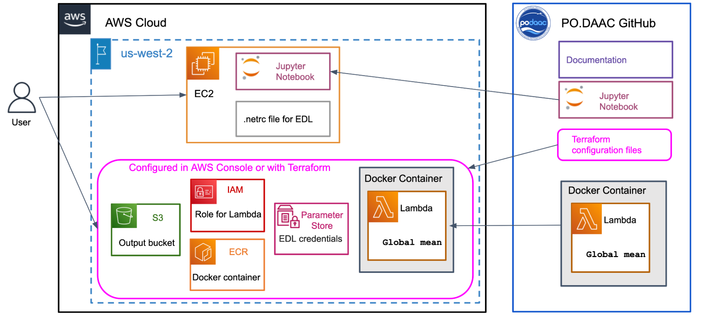

AWS Lambda
Scale Scientific Analysis in the Cloud with AWS Lambda
User Guide for Deploying AWS Services in end-user Amazon accounts
Introduction
Architecture
Deployment Instructions
Resources
AWS Services
Other Services
Introduction
Audience
This guide is intended for novice cloud users who do not have experience using Amazon Web Services (AWS).
This guide assumes intermediate knowledge of the following topics:
- Running python scripts on a server
- Familiarity with the command line
- Jupyter notebooks
This guide assumes conceptual understanding of the following topics:
- Organizing code into functions
- Identity management (administering users/roles)
- Virtual machines
Users who have less experience with these topics may need support from their institution’s IT department to configure these services.
Motivation
PO.DAAC has recently migrated all data products to the NASA Earthdata Amazon Web Services (AWS) Cloud. This move has enabled improvements to PO.DAAC’s internal processes and infrastructure to better scale ingest, archive, publication, and distribution of mission data.
Moving data to the cloud also opens up new cloud-computing workflows and capabilities for end-users to do scientific research and analysis. However, many end-users continue to download data to analyze locally. This tutorial demonstrates one pathway for using AWS cloud computing services to perform data analysis on large oceanography datasets.
Global Mean Sea Surface Temperature
Many scientific workflows begin with reducing the data in some way. Here we calculate the global mean sea surface temperature for the GHRSST Level 4 MUR 0.25deg Global Foundation Sea Surface Temperature Analysis (v4.2) dataset as an example of the type of analysis that can be done using AWS Lambda.
Cost Estimates
AWS provides a calculator to estimate the cost of running using cloud services. Using the cost estimator, running this tutorial one time as-configured to create a one year time series may result in a charge of $0.72 USD.
Scaling up to create a 10-year time series one time would increase the cost to $7.22 USD.
Running a seasonal analysis where you create a time series of the past 3 months, and repeat every month, is estimated to cost $0.18 USD per month, or $2.16 USD per year.
Note that costs will vary depending on the services you set up and how often you run them.
The AWS Free Tier includes access to a number of services for free/trial usage, but it works by charging you when you exceed the allotted free resources, rather than stopping services and access after the free credits have been used. This makes it relatively common to be charged for unexpected usage costs. Students especially are urged to work with an organizational AWS account where guardrails and costs are covered by the institution.
AWS has guides on avoiding unexpected charges, and tracking your free tier usage.
PO.DAAC is not liable for any costs incurred by users running this tutorial.
Architecture
Diagram
The architecture diagram in Figure 1 demonstrates how all of the components used in this tutorial fit together.

Figure 1. Deployment architecture for required AWS services and supporting infrastructure.
Repository Structure
The code files for this tutorial are available on GitHub in the PO.DAAC Tutorials repository under /notebooks/aws_lambda_sst/
Files:
sst.py : the code to be run by AWS Lambda. This gets packaged in a Docker container to be deployed to AWS.
sst-global-mean-exploratory.ipynb : a notebook that explores the MUR25 dataset and runs through the global mean calculation offline. This notebook can be run locally outside of AWS to trial run the code deployed to Lambda in sst.py
podaac-lambda-invoke-sst-global-mean.ipynb : the main notebook to invoke the Lambda code. Finds the files in Earthdata cloud, invokes Lambda on each, and plots the results as a timeseries. This notebook must be run from inside an AWS EC2 instance in the us-west-2 region.
Dockerfile : the instructions for Docker to build the container image with to deploy to AWS Lambda
requirements.txt : the required python packages to include in the Dockerfile. Note that these may be different than the packages required to run the notebooks
terraform : terraform deploys AWS infrastructure. This folder contains the terraform configuration files:
- terraform.tfvars
- main.tf
- sst-lambda.tf
- variables.tf
Deployment Instructions
1. Create an AWS Account
If you are a member of an institution that has an Enterprise AWS Instance, contact your institution to have an account set up. We strongly recommend students use an institutional account to avoid unexpected charges.
Alternatively, you can also use this tutorial with an AWS Free Tier account. This article describes the steps to create a new AWS account for an individual user.
See Cost Estimates for more information on using the AWS Free Tier, tracking usage, and estimating charges.
2. Deploy AWS Services
AWS Services can be set up using Terraform, or via the AWS Console. Using Terraform is recommended as it automates the deployment and makes it easier to reproduce. The AWS Console instructions are useful to better understand what Terraform is configuring in your account.
Start by installing the AWS Command Line Interface (CLI) on your local system. Note that AWS recommends setting up IAM credentials to run the AWS CLI (see prerequisites). Configure the AWS CLI to set your access keys and session token in the ~/.aws/credentials file, which will be used by Terraform to set up the AWS Services. If you choose to set up a profile, note the name you choose.
A. Deploy using Terraform (recommended)
Terraform is a program that can automate setting up and managing cloud services.
Install Terraform on your local system
Fork the https://github.com/podaac/tutorials repository, clone to your local machine. Navigate to /notebooks/aws_lambda_sst/terraform/ in a terminal.
Initialize Terraform
Edit terraform.tfvars with the names you want to give the AWS Elastic Container Registry (ecr_repo), the AWS Lambda role (lambda_role), the prefix to use for the Earthdata login parameters, and your user profile if you set one up when configuring the AWS CLI:
ecr_repo = "podaac-sst" lambda_role = "podaac-sst-lambda-role" prefix = "podaac" profile = ""Run the following command to initialize the terraform configuration files
terraform initRun terraform plan to check infrastructure state:
terraform plan -out=tfplanIf there are no modifications to the infrastructure required and everything looks correct, apply the plan:
terraform apply tfplan
B. Deploy using AWS Console (manual setup)
An alternative to using the included Terraform configuration is to manually configure each service in the AWS Console:
Create an S3 bucket
If your Lambda function produces output, it will need to be saved somewhere. S3 is a convenient starting place for object storage. Give your bucket a unique name, and ensure it is in the us-west-2 region if you will be accessing NASA Earthdata in the cloud. In this example the output bucket is named “podaac-sst”.
Set up Earthdata login credentials in the AWS Systems Manager Parameter Store.
If your Lambda function will read data directly from the Earthdata cloud, it is convenient to set up your EDL credentials as parameters. This avoids the complication and security implications of hardcoding EDL credentials in the Lambda function or setting up a .netrc file in a Docker container. One consideration is that the Lambda function will access Earthdata via the same set of credentials every time, regardless of the end user.
An alternative pattern to consider in cases where the Lambda function is going to be run frequently, is to store the AWS session tokens and access keys in the AWS Parameter store instead of the EDL username and password. The Lambda code would need to be changed to read those parameters instead, and a script could be set up to periodically refresh the tokens before they expire.
Set up the Elastic Container Registry (ECR)
If using a Docker container to deploy your Lambda, the Docker image can be deployed to the AWS ECR service so that the AWS Lambda service can reach it. Select a repository name (in this example we use “podaac-sst”). We recommend keeping tag immutability disabled so if you update the Docker image in the future it will overwrite the current version.
Create an IAM role for your Lambda function to run as
Set various policies depending on the other AWS services the Lambda needs access to:
- If you plan to read or write to an S3 bucket, the role needs read/write permission to S3. In this example we call the role podaac-sst-lambda-role, but it could be named anything.
- If you store Earthdata login (EDL) credentials for the Lambda function in AWS Parameter Store, you need to set an ‘AllowGetPutParameter’ policy for the role.
- We suggest also setting a Cloudwatch policy for the role to create logs.
- More information on IAM policies, the JSON syntax to use and formatting conventions can be found in the AWS IAM documentation.
Figure 2. An example access policy that allows read (get) and write (put) access to the podaac-sst S3 bucket.
3. Create the Lambda function
The Lambda function used in this tutorial contains large Python packages, so it is deployed using a Docker container. If you use different code that requires smaller package dependencies, you could package it as a zip file instead, or copy it directly into the Lambda function in the AWS Console. See this article for more information.
This tutorial contains a Dockerfile, which is a text file containing the instructions to build a Docker Image. This Dockerfile will create a Docker Image based on the AWS Lambda Python base image that contains the packages listed in the requirements.txt file, and will run the lambda_handler function from the sst.py code file.
Install Docker on your local system and make sure it is running.
In your terminal, navigate to /notebooks/aws_lambda_sst/
Build the container image by running the following command:
docker build -t podaac-sst .Login to the AWS ECR service you set up earlier from the command line
docker login -u AWS https://<accountID>.dkr.ecr.us-west-2.amazonaws.com -p $(aws ecr get-login-password --region us-west-2)Push the Docker container to the ECR repository
docker push <accountID>.dkr.ecr.us-west-2.amazonaws.com/podaac-sstCreate the Lambda function by running the following command:
aws lambda create-function \ --function-name podaac-sst \ --package-type Image \ --code ImageUri=<accountID>.dkr.ecr.us-east-1.amazonaws.com/podaac-sst:latest \ --role arn:aws:iam::<accountID>:role/podaac-sst-lambda-role
4. Test the Lambda function in the AWS Console
Open the AWS Console in your web browser, and navigate to the Lambda service. You should see your function listed. Click on the name of your function, which should open a page similar to the one shown in Figure 3.
Figure 3. The podaac-sst Lambda function in the AWS Console.
Under Function Overview, click on the Test tab. Create a new event, and input the event JSON below. Change the values if you selected a different bucket name during setup.
{
"input_granule_s3path": "s3://podaac-ops-cumulus-protected/MUR25-JPL-L4-GLOB-v04.2/20221201090000-JPL-L4_GHRSST-SSTfnd-MUR25-GLOB-v02.0-fv04.2.nc",
"output_granule_s3bucket": "podaac-sst",
"prefix": "podaac"
}Click the orange Test button to test the Lambda function. After a few seconds, you should see a message stating Executing function: succeeded (Figure 4). You can expand this section to see more details of the successful test. If the test fails, expand the message to troubleshoot.
Figure 4. A successful test of the podaac-sst Lambda function in the AWS Console.
5. Launch an EC2 instance
There are instructions on setting up and connecting to an EC2 instance in this tutorial if you have not done this before. Connect to the EC2 instance via SSH, and start Jupyter Lab.
6. Clone this repository to the EC2 instance
Create a fork of the https://github.com/podaac/tutorials repository, and clone it to your EC2 instance. Open the /notebooks/aws_lambda_sst/podaac-lambda-invoke-sst-global-mean.ipynb notebook.
7. Log in to AWS from the EC2 terminal
Log in to your AWS account from your EC2 terminal. See this article on configuring your credentials in the AWS CLI if you have not done so. This will set your access keys and session token in the ~/.aws/credentials file in your EC2 instance, which will be used to set up a boto3 session later in the workflow to read the resulting data from the S3 output bucket. You may need to refresh these credentials if it’s been more than 4 hours since you last set them.
8. Run the Notebook
Open the /notebooks/aws_lambda_sst/podaac-lambda-example-sst-global-mean.ipynb notebook in Jupyter Lab in your EC-2 instance. You may need to install the Python packages listed in the import statements in the first cell. We recommend using conda-forge to install these packages to a new conda environment to avoid version conflicts.
Step through the cells to query for granules from the MUR SST collection and invoke the Lambda function. You may need to check the number of output files in the S3 results bucket in the AWS Console to determine when Step 2 completes before moving to Step 3. Depending on the number of granules you are searching, this may take a few seconds to a few minutes.
Continue through Step 3 of the notebook to plot the data.
Congratulations! You configured, deployed, and ran an AWS Lambda function to generate a timeseries of global mean sea surface temperatures over time.
9. Modify Lambda function and update Docker Container (Optional)
To make modifications to the Lambda function after it has been deployed:
Install Docker on your local system, and make sure it is running.
Modify the code in sst.py, and test your changes.
Build the Docker container:
docker build -t <accountID>.dkr.ecr.us-west-2.amazonaws.com/podaac-sst .
Log into JPL AWS ECR:
docker login -u AWS https://<accountID>.dkr.ecr.us-west-2.amazonaws.com -p $(aws ecr get-login-password –region us-west-2)
Push most recent build (and modifications) to AWS ECR:
docker push <accountID>.dkr.ecr.us-west-2.amazonaws.com/podaac-sst
Navigate to the podaac-sst lambda function in the web console.
Click on the “Image†tab.
Click the “Deploy new image†button.
Make sure the correct container image is selected (it usually is by default) and click the “Save†button.
Wait for the image to be deployed to the lambda function.
Test as in Step 4.